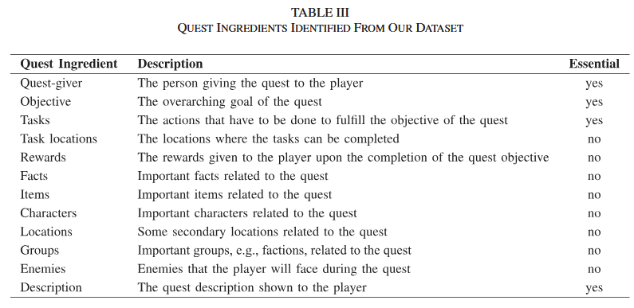

Denník
22.2.2026
Prvé stretnutie so školiteľom bolo 19.2. Doporučil mi 4 články na čítanie (PDF v časti Zdroje). Dneská som si ich vytlačila a začnem ich čítať.
24.2.2026 - CONAN
Cez výkend sa mi podarilo prečítať prvý článok Let CONAN tell you a story: Procedural quest generation. Nasledujú moje poznámky k tomuto článku.
- CONAN - engine na generovanie questov
- Agenti (postavy) musia zadávať úlohy, ktoré nejakým spôsobom dávajú pre ne zmysel. (Sú v súlade s ich morálkou a zámermi)
- CONAN to rieši tabuľkou prefernecií - čím vyššia cena úlohy, tým menej sedí tento typ úlohy danej postave
- Tri základné kategórie questov:place-oriented - dostaň sa niekam, time-oriented - splň danú podmienku za daný čas, preži dokým, ... objective-oriented - splň daný cieľ
- CONAN nedokáže generovať time-oriented quests - nepozná veličinu času
- Svet = lokácie, postavy, predmety, Iniciálny stav = ich stav na začiatku hry
- Questy sa generujú osobitne pre každú postavu
- Striedanie kôľ: NPC a hráč
- V kole NPC
- pre každú postavu sa vygeneruje niekoľko cieľových stavov, pre každý cieľ sa nájde lán -> vyberie sa ten quest s plánom s najnižšou cenou
- vybraný quest postava prezentuje hráčovi
- V kole hráča
- hráč vykoná akcie, ktoré ho dovedú k splneniu nejakého (alebo aj viacerých) quest
- potom nastane nové kolo NPC
- V kole NPC
- Nové questy sa generujú v každom kole
- questy sa prispôsobujú aktuálnemu stavu sveta
- questy z predchádzajúceho kola sú zahodené, aj keby sa ešte dali splniť??
- CONAN nedokáže postupne sťažovať questy
- Potrebujem nejako vedieť vyhodnotiť kvalitu generovných questov - tu rozdelenie questov do 9 kategórií, zisťovanie, či generuje všetky
3.3.2026 - Quest-GPT-2
Od posledného záznamu som prečítala článok Generating Role-Playing Game Quests With GPT Language Models. Nasledujú moje poznámky k tomuto článku.
- Generovanie questov pomocou upraveného GPT-2
- Výsledky neboli veľmi presvedčivé (questy nedávajú veľmi zmysel, zlá gramatika, chyby v rozlišovaní postáv)
- Generuje LEN textový popis úlohy - nie samotný quest (ten dostane na vstupe)
- Rozbitie questov na "ingrediencie"

- Na rozdiel od CONAN generuje aj odmenu za questy
- Nie len objektívne vyhodnotenie výsledkov podľa určených kritérií, ale aj hodnotenie reálnymi ľuďmi pomocou formulára
15.3.2026 - Genetický algoritmus + plánovanie
Tento záznam sa týka článku Procedural Generation of Quests for Games Using Genetic Algorithms and Automated Planning. Zo všetkých článkov, ktoré som doteraz prečítala, asi môj najmenej obľúbený, lebo sa strašne ťažko čítal a bolo mu náročné porozumieť. Zároveň je však jediný, ktorý doteraz zahŕňal aj implementáciu výsledného systému v reálnej hre. Nasledujú moje poznámky k tomuto článku.
- Quest definuje ako postupnosť úloh, ktoré má hráč splniť
- Generovanie questov v hernom svete s veľkým množstvom postáv, miest, predmetov a možných akcií, ktoré môže hráč vykonať je náročné - využitie genetického algoritmu na efektívne hľadanie vhodných questov
- Genetický algoritmus
- Využíva evolučné princípy na hľadanie optimálneho riešenia problému
- Na začiatku má niekoľko náhodne vygenerovaných jednotlivcov populácie (tu questov)
- Každého jednotlivca vyhodnotí pomocou Fitness funkcie, ktorá určí ako dobre vyhovuje daným podmienkam
- Najlepší jednotlivci sú zvolení za rodičov novej generácie - z pomedzi najlepších sa vyberú náhodní dvaja a znich sa pomocou crossover spraví nový jedinec (napr. vezme sa polocica z jedného rodiča, druhá polovica z druhého rodiča a dá sa to dokopy), v nových jedincoch môže nastať aj nejaká mutácia (niečo sa náhodne zmení, aj keď to rodičia nemali)
- Proces sa opakuje cez niekoľko generácií (v článku má jedna populácia 100 jedincov a algoritmus vytvorí 100 generácií) a po vytvorení daného počtu generácií sa z poslednej generácie vyberie najlepší jedinec a ten je výsledkom algoritmu
- V genetickom algoritme je quest reprezentovaný ako Q = (P, S0, G, O)
- P - množina atómov, čo môže platiť (at(C,P), character(C), ...)
- S0 - iniciálny stav sveta, čo všetko platí na začiatku questu (charakter(john), at(john, forest), ...)
- G - cieľový stav, čo musí platiť, aby bol quest splnený
- O - operácie, akcie (meno, predpoklady, efekty), ktoré môžu byť vykonané nejakou postavou
- P a O sú rovnaké pre všetky questy v rovnakom hernom svete, S0 a G určujú rozdielne vlastnosti questov a preto je na ne v genetickom algoritme aplikovaný crossover a mutácia
- Jednotlivci pre iniciálnu populáciu sa generujú náhodne podla Domain Database -
DB = (Α, Β, Γ, Δ, Ε)
- Α - množina párov (obj, objType) - definuje všetky objekty v hernom svete a ich typy. Napr. Α = {(john character), (forest, place), (antidote, item), ...}
- Β - množina uzemnených literálov, ktorá popisuje vlastnosti a vzťahy objektov v hernom svete, napr. Β = {path(forest, village), alive(john), at(john, forest, ...)}
- Γ - množina obmedzení, sú tri typy obmedzení
- kontrola typu premenných - (cured, (character)) - cured má jeden predikát a ten musí byť typu character
- kontrola protichodnosti - (healthy, infected (character)) - character nemôže byť súčasne healthy aj infected, ale niečo z toho musí byť
- kontrola jedinečnosti - (at, (character, ∃!place)) - character sa môže nachádzať len na jednom mieste súčasne
- Δ - množina plánovacích operácií, všetky možné udalosti, ktoré môžu nastať
- Ε - množina párov (o, tension) - aký má operácia o vlpyv na napätie questu
- Fitness Funkcia - hodnotí jednotlivé questy podľa toho ako sa ich štruktúra podobá troj-actovej štruktúre (najprv je úvod s nižším napätím, potom nastane zápletka a napätie rastie až do vyvrcholenia, kedy nastane rozuzlenie a napätie klesá)
- Vygeneruje sa plán pre daný quest a potom podľa plánu sa určí ako veľmi sa priebeh questu podobá požadovanej štruktúré. Každá akcia má priradené v Ε či jej vykonaním napätie vzrastie (+), klesne (-), alebo ostane rovanké (=), potom numerická reprezentácia štruktúry questu, ktorej plán pozostáva z 6 akcíí môže vyzerať napr takto: {1,1,2,2,3,2}
- Fitness funkcia naškáluje štruktúru questu na rovnakú dĺžku, ako má požadovaná štruktúra a spraví ich rozdiel - čím menší rozdiel, tým lepší quest
- Beh genetického algoritmu je výpočtovo náročný - optimalizácie (paralelizácia výpočtov Fitness funkcie pre jedincov jednej generácie, cashovanie štruktúr questov - ak je nejaký quest vo viacerých generáciách, nemusíme znovu preň vytvárať plán)
- Testovanie v hre - v implementácii hry questy už nie sú reprezentované ako Q = (P, S0, G, O) , ale ako plán akcií, ktoré musia nastať - toto znamená jediný možný spôsob, ako kvest dokončiť
- Vyhodnotenie
- Porovnanie questov vygenerovaných pomocou genetického algoritmu a náhodne generovaných questov
- Výpočtová náročnosť algoritmu - vygenerovanie 50 questov trvalo skoro 4 minúty
- Turingovo testovanie - hráči dostali výslednu hru v ktorej boli tri generované questy a tri questy vytvorené ľudskými dizajnérmi, po dokončení questu mal hráč rozhodnúť, či quest bol generovaný alebo vytvorený človekom - hráči rozhodli správne približne v polovici prípadov, teda generované questy sa dajú ťažko rozlíšiť od týých vytvorených človekom
- S týmto prístupom mám taký problém, že generuje postupnosť questov, nie samostaný quest. Ak som to správne pochopila, tak pri spustení hry sa na začiatku vygenerujú všetky questy tak, aby na seba nadväzovali a potom hráč cez ne už len hrá. Toto zabezpečí iný playthrough pri každom spustení hry, ale čo ak sa hráč nezachová podľa pripraveného plánu a napríklad zabije nejakú postavu skôr ako to hra zamýšlala? Táto postava potom môže pri neskorších questoch chýbať.
17.3.2026 - Doran and Parberry
Takže, dočítala som článok A Prototype Quest Generator Based on a Structural Analysis of Quests from Four MMORPGs. Tento článok bol spomínaný aj v článku o CONAN-ovi a aj myslím ešte v jednom z predchádzajúcich článkov. Nasledujú moje poznámky k nemu.
- Questy vo videohrách majú podobnú štrujktúru
- Generátor potrebuje vedieť nie len vygenerovať quest, ale aj mať prostriedky na zistenie, kedy quest vygenerovať a zabezpečiť, aby dával zmysel pre súčasný stav sveta
- Quest je špeciálnym prípadom plánovania - má počiatočný stav, cieľový stav a množinu akcií, ktoré hráč musí vykonať na to, aby quest dokončil
- Plánovací problém je NP-ťažky - potrebujeme stanoviť obmedzenia, aby sme zmenšili prehľadávací priestor
- Quety delí na 9 motivácií: Knowledge, Comfort, Reputation, Serenity, Protection, Conquest, Whealtj, Ability, Equipment
- Zvolená motivácia musí dávať zmysel pre dané NPC a časom sa môže meniť (hlavne,
keď hráč dokončí quest pre NPC)
- Toto úplne neviem ako je zabezpečené, keďže neskôr píšu, že motivácia sa náhodne generuje
- Každá motivácia má 2 - 7 stratégií
- Každá sztratégia pozostáva z 1 - 6 akcií, ktoré hráč musí vykonať
- Akcia je buď jednoduchá atomická akcia alebo môže byť rekurzívne vyjadrená
ako sekvencia akcií (môže sa vetviť na ďalšie akcie)
- Akcie môžu byť vyjadrené pomocou stromov - listy = atomické akcie, vnútorné vrcholy = vetvia sa na podakcie
- Akcie sa môžu rozširovať podľa pravidel daných bezkontextovou gramatikou
- Akcia môže byť prázdna (napr. akcia <learn> ::= <goto> <subquest> listen - hráč nemusí zakaždým dostať subquest alebo ak už je na správnom mieste, tak goto bude prázdna akcia
- Generovanie questu
- Na začiatku potrebujeme zvoliť náhodnú motiváciu pre NPC a
seed pre Generátor
- rovnaký seed + motivácia = rovnaký quest
- Náhodne sa vygeneruje jedna stratégia pre danú motiváciu => dotsaneme počiatočnú sekvenciu akcií
- akcie, ktoré nie sú atomické rekurzívne rozvíjame
- Rozhodnutie, kedy sa akcia rozvinie (a ako) a kedy je atomická sa vykoná na základe predpokladaných znalostí hráča a aktuálnom stave herného sveta
- Napr. generátor nepošle hráča zozbierať niečo, čo už má alebo nebude predpokladať, že vie niečo, čo sa ešte nemal ako dozvedieť
- Špecifické detaily (mená postáv, predmety, miesta) sa dosádzajú počas toho, čo sa strom rozširuje => strom s rovnakou štruktúrou v závyslosti od detailov popisuje iný quest
- Na začiatku potrebujeme zvoliť náhodnú motiváciu pre NPC a
seed pre Generátor
- Generátor je napísaný v PROLOG
22.3.2026
Tento štvrtok som bola na stretnutí zo školiteľom, kde sme vybrali ešte tri články, o ktorých si myslíme, že
by mohli byť užitočné. Takisto sme sa rozprávali o článkoch, ktoré som doteraz prečítala. Výstup je asi
nasledovný. Prístup s GPT modelom sme zamietli. Tento prístup generuje len textový popis questu, nie samotný
quest a okrem toho výsledky, ktoré boli v článku dosiahnuté nevyzerali veľmi presvečivo. Prístup s genetický
algoritmom je zaujímavý, ale to, že sa všetky questy vygenerujú na začiatku hry sa mi nepozdáva a okrem
toho sú výstupom questy v podobe presnej postupnosti krokov, čo našemu zámeru, aby sa dali questy plniť rôznymi
spôsobmi nevyhovuje. Postup v poslednom článku, ktorý som čítala, kde sa questy generujú pomocou bezkontextovej
gramatiky ako stromy sa mi síce veľmi páči, ale tiež neviem prísť na spôsob, ako by sa toto riešenie dalo
rozvynúť do questov s viacerými riešeniami. Tak mi ostal prvý článok o CONAN-ovi. Toto sa mi zdá, že by sa asi
najlepšie dalo rozvynúť a prispôsobiť našemu zámeru. Sú tam isté problémy, ktoré v súvislosti z viacerými riešeniami
questov budeme musieť nejak ošetriť, ale v podstate CONAN považuje za quest len cieľový stav sveta, do ktorého sa
hráč musí dostať a do toho stavu, by sa teoreticky mohlo dať dostať viacerými spôsobmi, čo je podľa mňa práve to, čo
potrebujeme.
Avšak, pred tým ako sa sto percentne rozhodnem, pre tento prístup, chcem si prečítať tie nové tri články, ktoré sa
práve venujú vetviacim sa a nelineárnym questom, čo by mi mohlo ponúknuť nejaké nové nápady, ako by som mohla generovať
questy, ktoré dovolia hráčovi zvoliť si, ako quest dokončí.
Tým sa dostávame k plánu na najbližšie týždne. Do 15.5. ostáva menej ako osem týždňov, takže aby som všetko
stihla treba približne dodržať nasledovné:
- Prečítať 3 články - 2 týždne
- Naprogramovať prototyp - 4 týždne
- Pripraviť odovzdanie na Projektový seminiár - 1 týždeň (+ 4 dni)
30.3.2026 - Genetický algoritmus + Vetviace sa questy
Takže, dočítala som ďalší článok. Volá sa Procedural generation of branching quests for games. Tento článok nadväzuje na článok o genetickom algoritme, ktorý som čítala skôr. Rozvíja ho a mení tak, aby bolo možné generovať questy s rôznymi koncami. Nasledujú moje poznámky:
- Rozvetvené questy - quest definovaný ako stromová štruktúra
- Game Tree Ω
- Strom všetkých questov v hre (jeho vrcholy sú quest)
- Ak quest má 3 rôzne konce, tak v Ω má troch potomkov (3 iné questy, ktoré nadväzujú na každý jeho koniec)
- Quest je strom
- Je rozdelený na podciele
- Z iniciálneho stavu sa môžeme dostať do niekoľkých podcieľov
- Podcieľ, do ktorého sa dostanem je iniciálnym stavom pre ďalších n podcieľov ... pokračujem, až sa dostanem do niektorého z finálnych cieľov
- Každá časť z jedného vrcholu do druhého je osobitný plánovací problém
- Rozšírenie obmedzení od predchádzajúcej práce
- rj - v predikáte označíme nejaký term ako dôležitý - chceme, aby sa tento predmet vyskytoval aj v ďalších vetvách pod touto vetvou. Napr. request(character, character, ?item, place) -> ak nejaká postava chce od inej postavy nejaký predmet, tak by sa ten predmet mal vyskytovať v nasledujúcich krokoch úlohy.
- qualifi - či predikát predi môže byť pridaný do iniciálneho alebo cieľového stavu bez porušenia logiky sveta. Napr. quest môže spawnuť nepriateľov alebo nejaké predmety potrebné pre quest bez toho, aby to v hernom svete nedávalo zmysel
- motifi - ktoré predikáty majú podobnú štruktúru. Sú kandidátmi na to, aby boli súčasťou alternatívnych podcieľov questu. Napr. či sa predikát týka zbierania predmetov alebo bojovaniu s nepraiteľmi
- Generovanie iniciálnej populácie pre genetický algoritmus
- Vygenerujeme quest-giver-a (zadávateľa úlohy) - náhodná postava z existujúcich postáv v hre
- Vygenerujeme motív (motifi) - náhodný z existujúcich
- Vygenerujeme jednotlivca - iniciálny stav = stav sveta + niekoľko náhodne vygenerovaných predikátov, vygenerujeme niekoľko cieľových stavov (napr. 1 - 3), rieši sa plánovací problém z iniciálneho stavu do každého cieľového stavu (ak plán neexistuje, cieľ sa zahodí), opakujeme pre každý vzniknutý cieľový stav, do kým nemáme dostatočne vysoký strom
- Crossover
- Vyberieme dvoch jedincov na crossover
- Nájdeme kompatibilné vrcholy
- P1Si ↔ P2Sj - potomkov stavu i z prvého rodiča vieme zavesiť na stav j z druhého rodiča a naopak
- P1Si ← P2Sj - potomkov zo stavu na pravo môžeme zavesiť pod stav na ľavo
- P1Si → P2Sj - potomkov zo stavu na ľavo môžeme zavesiť pod stav na pravo
- Nekompatibilné vrcholy sa len prekopírujú do nového jedinca, na kompatibilných sa podľa typu vymenia potomkovia
- Fitness Function
- Hľadá story arc podobný danej štruktúre
- Pre každú cestu v strom questu vyráta ako dobre sa zhoduje s danou štruktúrov a spraví priemer pre celý quest
- Okrem story arc môže brať do úvahy ďaľšie parametre ako napríklad, počet opakovaných výskytov dôležitých predmetov, výšku stromov questov, ...
7.4.2026 - Posledné dva články
Posledné dva články mám dočítané. Prvý, Non-Linear Quest Generation, bol síce krátky, ale veľmi náročný na čítanie.
- Quest je reprezentovaný hypergrafom
- Akcia = pár(sloveso, podstatné meno)
- Obmedzenia
- Máme množinu slovies a množinu podstatných mien
- Každé slovo je buď living alebo static
- Statické sloveso môže byť spojené len so statickým podstatným menom a living len s living
- Statické podstatné mená sa delia na objekty a lokácie
- Hyper node - viac akcií - tieto môžu byť vykonané v ľubovoľnom poradí
- Najprv sa vygeneruje lineárny quest a potom sa hľadajú miesta na paralené rozšírenie
- Vo videohrách je potrebné naprogramovať interakcie medzi veľkým množstvom objektov a postáv
- Tento článok sa venuje vytvoreniu systému, ktorý umožní dobre formálne definovať tieto interakcie, aby sa zabránilo chybám pri komunikácii medzi dizajnérmi a programátormi
- Takisto je možné kód pre interakcie generovať pomocou návrhových vzorov (dizajnér si to vie vyklikať bez zásahu programátora)
- Ecistujú 4 typy návrhových vzorov: encounter(interakcia medzi PC a nejakým neživým objektom), dialog(rozhvor medzi PC a NPC), behaviour(ako sa má nejaké NPC správať - čo má kedy robiť), plot(progresovanie cez quest)
- Dôležité pre našu prácu
- hráč postupuje cez quest v sérii stavou: nepriradený, priradený, vyriešený, uzavretý
- Je vhodné programovať generátori niečoho tak, aby sa dali dobre nastaviť pre konkrétnu hru, v ktorej ich chceme použiť (aby sa to dalo ľahko prenášať do viacerých hier)
Záver "výskumu"
- Questy sa dajú dobre reprezentovať pomocou výrokovej logiky(predikátov a operácií)
- Quest má počiatočný stav a cieľový stav
- Či je quest splniteľný a aké akocie musí hráč vykonať zistíme riešením plánovacieho problému
- Ak chceme questy s alternatívnymi riešeniami, je dobré questy rozdeliť na podčasti
- Z iniciálneho stavu sa viem dostať do niekoľkých medzistavov a z každého medzistavu buď do ďalšieho medzistavu, alebo do cieľového stavu
- Ako generovať stavy?
- Genetický algoritmu - asi najpresnejší, ale výpočtovo náročný, v článkoch použitý na generovanie offline
- CONAN - náhodne generuje predikáty, dosadí parametre (náhodne podľa obmedzení), vyberie predikát, ktorého plán najlepšie spĺňa kritériá - quest je len jeden predikát (možno by sa dalo rozšíriť na množinu predikátov)
- Rekurzívne pomocou bezkontextovej gramatiky - rekurzívne generuje celý quest (nemá cieľové stavy) -> nevieme rozdeliť na medzistavy
- Čo chceme, aby naša práca spĺňala
- Ako metódu na genrovanie questov sme zvolili genetcký algoritmus
- Questy budeme generovať offline, nie počas hry
- Quest môže pri prijatí hráčom vytvoriť nejaké predmety alebo nepriateľov
- Hráč by mal mať naraz k dispozícii viac questov - nechcem len jednu dejovú líniu, viac sa mi páči jak CONAN má questy pre každú postavu (quest-givera) zvlášť
- Hra musí kontrolovať, či je quest splniteľný - ak z nejakého dôvodu sa niektorí quest stane nesplniteľným (napr. hráč zabije postavu potrebnú pre daný quest), tak to treba ošetriť (buď nahradiť nasledujúcim questom, alebo odstrániť)
13.4.2026
Je najvyšší čas začať pracovať na prototype. Keďže sme sa rozhodli ísť cestou plánovacieho problému, ako prvé potrebujem nejaký plánovač. Najprv som chcela používať HSP2 heuristic search planner, ktorý bol spomínaný v článku o genetickom algoritme. Ten sa mi však nepodarilo rozchodiť. Problémom bolo asi to, že plánovač nebol 15 rokov aktualizovaný a nové gcc sa mu nepáčilo. Rozhodla som sa preto siahnuť po inom plánovači: Fast Downward, ktorý som si pripravila na svojom počítači. V súčasnosti sa snažím pripraviť malú testovaciu doménu a zakádovať ju do formátu pddl pre tento plánovač.
15.4.2026 - Vytvorenie domény herného sveta
Ako som spomínala. Snažila som sa vytvoriť testovaciu doménu reprezentujúcu jednoduchý herný svet. Rozhodla
som sa využiť elementy z hry The Hopper, ktorú som naprogramovala v rámci bakalárskej práce. Formát pddl
definuje plánovací problém pomocou dvoch súborov. Prvý súbor je doména, ktorá obsahuje typy premenných,
predikáty a možné akcie. Takisto sa dajú definovať axiómy pomocou symbolu :derived. Druhý súbor sa nazýva
problém, ktorý obsahuje informácie špecifické pre daný problém - objekty dôležité pre tento problém,
iniciálny stav a cieľový stav. Na testovanie som vytvorila doménu
hopperDomain.pddl
a problém hopperKillWarewolf.pddl.
Vytvorenú doménu som prispôsobila tak, aby sa podľa nej dali vytvárať plány podobné postupu hráča pri plnení
úlohy. Doménu budem možno v budúcnosti dopĺňať o ďalšie predikáty a akcie. V súbore
Vytvaranie_domeny_poznamky.txt
je spísané ako som dolaďovala doménu na základe plánov, ktoré pre problém hopperKillWarewolf.pddl
vracala.
Na záver tohto záznamu treba ešte dodať, že som narazila na problém súvisiaci s PDDL a Fast Downward. A to
síce taký, že sa nedá jednoducho hľadať ďalšie plány tak, že zakážem získaný plán. Toto je nepríjemné, keďže
celá naša práca je zameraná na hľadanie alternatívnych riešení.